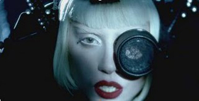
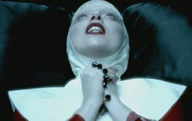
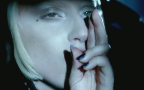

Lady gaga sekarang tengah menjadi buah bibir masyarakat indonesia. Pasalnya kedatangannya untuk melakukan konser menjadi perdebatan dikalangan masyarakat, khususnya pemuka agama. Ada apa sebenarnya?Kami mencoba menggali misteri dan konspirasi dibalik sosok lady gaga. salah satunya adalah dalam video klip lagu Alejandro.Video dimulai dimana sekumpulan laki-laki membuat beberapa formasi dan beberapa dari mereka kepalanya ditutup dengan sarung, mungkin mengisyaratkan bahwa itu adalah orang-orang tahanan dari berbagai tindak kejahatan. Salah satu laki-laki memegang benda berbentuk piramid sementara yang lain memegang hexagram seperti tahanan yang sedang berbaris. “I know that we are young. And I know you may love me. But I just can’t be with you like this anymore, Alejandro.” Setelah itu diteruskan dengan proses pemakaman. Perarakan membawa peti mati, dapat kita lihat Gaga mengenakan jubah hitam dan membawa Sacred Heart (Hati Kudus). Sacred Heart ini adalah pendarahan hati Tuhan untuk umat manusia (dalam kepercayaan kristiani). Kenapa kata Sacred Heart? Tengok gambar di bawah. Hati yang Lady Gaga pegang itu bukan hati biasa, tapi ada paku dan kawat yang di-lilit-lilit (simbolik) yang mirip dengan Sacred Heart of Jesus (merujuk kepada hati Yesus).
But I just can’t be with you like this anymore, Alejandro. Siapa Alejandro? Seorang lelaki yang dia tak bisa bersamanya? Kemudian dia dihianati oleh Roberto dan Fernando? (berdasarkan lirik). Kalau dengar lagu tanpa melihat video mungkin kita tidak akan mengerti. Gambaran video ini mengatakan bahwa Alejandro mungkin membawa suatu maksud yang lebih dalam. Jadi kalau bukan manusia. Apa dan siapa Alejandro?

Kemudian Gaga digambarkan kedudukannya sebagai orang yang berkuasa, memakai mahkota hitam sambil melihat tahanan melakukan persembahan untuknya. Gaga kemudian mengalihkan satu goggle. Sekaligus mempamerkan simbol illuminati – The All-Seeing Eye (bukan sekali tapi banyak kali) untuk mengungkapkan sifat sejati dari kekuatannya. Setelah itu ada sebuah adegan simbolik lagi, seorang tentara dipaparkan dipasang ke string, seperti boneka. Yang jelas menunjukkan bahwa ada seseorang mengontrol dia. Atau istilahnya, dia adalah ‘mind-control slave’. Dia tidak bisa bergerak sesuai dengan keinginannya. Dan memegang senjata di kemaluannya. Wajah dia tampak kosong, tampak bingung seperti seorang hamba yang telah dikendalikan segala pergerakannya oleh Gaga si Illuminatist. (Kristiani) dan memegang kalung yang ada manik-maniknya. Waktu scene ini, Gaga memandang ke langit dan menyanyi part : “Stop, please, just let me go, Alejandro”. Ketika menyebut “Alejandro” Gaga mengangkat kedua tangannya kelangit. Jadi dalam part ini, tampak dengan jelas yang mengartikan bahwa Alejandro merujuk kepada Tuhan bukan manusia.

(Alejandro = Tuhan) “She hides true love En su bolsillo. She’s got a halo ’round her finger, Around you.” Untuk lirik di atas, Halo bisa diartikan sebagai “suci” (holy). Around her finger (cincin kimpoi) merupakan penyatuan Gaga dengan Tuhan melalui agama, tapi dia sekarang malu dengan pernikahan ini karena suaminya telah mati. Jadi dia menyembunyikan cincin itu di bolsillo-nya, bolsillo dalam bahasa Spanyol maksudnya saku dan dia mulai menyalahkan Tuhan . Sehabis lirik itu, konsep penolakkan (rejection) ditujukan kepada Tuhan dimulai. Karena Tuhan nampaknya tidak memenuhi kebutuhan rohani Gaga. Dia kemudian memutuskan untuk mencari Ketuhanan diri. Dengan memeluk satu spirituality yang baru. Dalam video ini lebih menunjukkan bahwa Gaga telah melakukan semacam pertukaran dari biarawati menjadi Paderi Luciferian (Setan). Saya mengatakan bahwa itu adalah paderi Setan karena jubah yang dipakai Gaga di atas mengarah ke hal semacam itu. Ada banyak sekali simbol salib terbalik. Ini menunjukkan bahasa simbol yang membawa maksud yang jelas. Kita tahu salib adalah simbol keimanan bagi agama Kristen yang merupakan simbol pengorbanan Yesus & kebangkitan-Nya. Dalam agama Kristen, salib terbalik dikenali sebagai “Cross Of St.Peter”, untuk menghormati Simon Peter yang diminta untuk disalibkan terbalik karena dia merasa tidak sesuai untuk dihukum mati dengan cara yang sama seperti orang Kristen yang lain. Tapi dalam kalangan bukan orang Kristen, salib terbalik merupakan simbol penyelewengan dan sesuatu yang membawa kuasa negatif karena simbol terbalik selalu ditemui dalam ilmu hitam dan Satanisme yaitu pemujaan Setan.

Setelah itu, Gaga memasukkan Kalung Rosario (Tasbih) kedalam mulutnya. Kalung Rosario adalah serangkaian manik-manik yang digunakan dalam tradisi Katolik untuk berdoa dan meditasi. Dalam Islam sendiri ada tasbih. Jadi dengan menelan tasbih, Gaga menggabungkan dalam dirinya simbol ketaatan dalam agama dan juga menggambarkan cara Gaga untuk mendapatkan Ketuhanan dengan caranya sendiri. Dia ingin mencapai Keilahian dengan caranya sendiri. Itu adalah prinsip aktif Lucifer. Jelas menunjukkan Gaga bukan menyembah Tuhan, tetapi Lucifer. I’m not your babe I’m not your babe, Fernando. Waktu menyebut perkataan “Fernando”, Gaga membuat simbol tangan seperti itu (yang jelas merujuk kepada Yesus). Itu adalah tanda berkat bagi ajaran Kristen terutama kepada mereka yang dianggap Suci. Ingat, Gaga itu suka membuat simbol dengan seenaknya dia. Sebab semua simbol membawa makna yang tersendiri, mari kita cari lagi apa makna dari dia. Dapat kita lihat, dibelakang Gaga ada sebuah salib. Gaga sudah menghina ajaran Kristen cukup banyak dalam video ini. Gaga menyanyi sambil memandang ke atas dan kemudian dia mengulang-ulang lirik : ”Don’t call my name, Don’t call me Name Bye Fernando (Yesus)” an di akhir video ditunjukkan, Gaga dilampirkan bersama strings. Pada mulanya Gaga yang mengontrol lelaki itu dan di akhir video ditunjukkan Gaga-lah yang ternyata di kontrol. Oleh siapa? Pikirkanlah siapa yang mengontrol Gaga ini. Siapa dalang dibalik semua ini? Siapa pemimpinnya? Anda mampu mencari jawabannya kan?